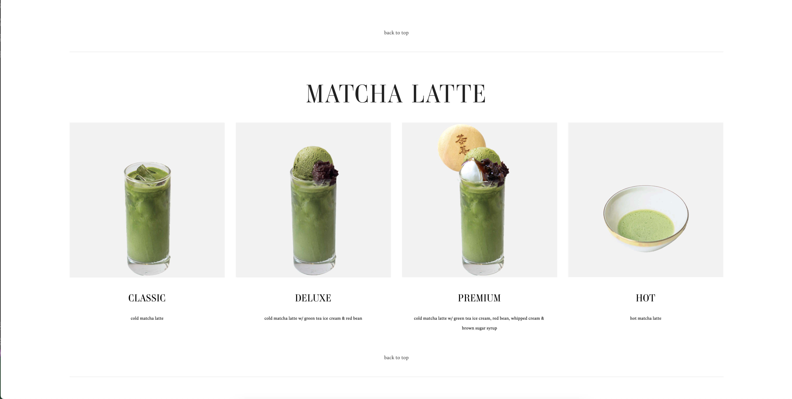
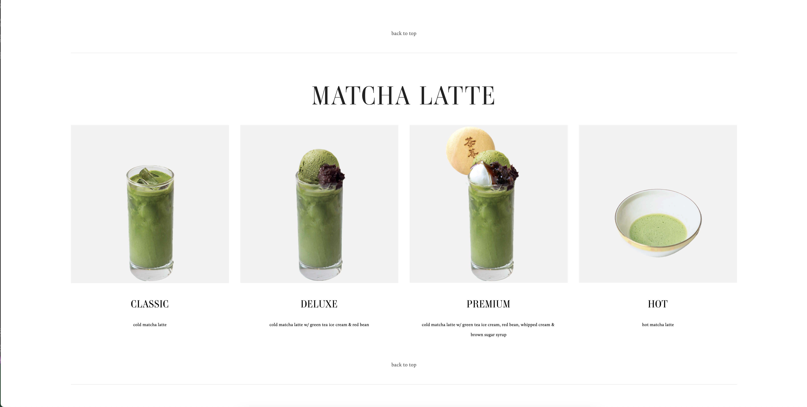

Final project proposal
Introduction
Tea Room
The Tea Room offers an oasis in the city for seattlites to reflect, conversate, and enjoy premium herbal blends and light dishes. We host nightime events after 9 pm, including live DJ sets, acoustic sessions, and weekly poetry readings.
Target audience
Tea Room's customer base falls into the group of young working professionals looking for a sense of tranquility and community in the midst of city life. The users of his site are looking for event details, food and tea menus, and genral information about the storefront to plan their visits.
The goals of our target audience include having a unique experience in the city. They are looking for a place to rest and regroup away from the business of the day, as well as a place to meet other like-minded indivduals during night-time community art events.
Comparative analysis
Tea At Shiloh


Cha-an Tea House
 

Chado Tea Room


Website content
Home
Join us in the heart of Seattle to reflect, conversate, and enjoy premium herbal blends and light dishes. Sip at our storefront for a restful afternoon or visit after 9 pm for live DJ sets, acoustic sessions, and weekly poetry readings.
[Tea with peaceful backdrop.]
Philosophy
We are believers of the simple pleasures in life. Hot tea, nourishing food, and great conversation. We are here to bring a comforting, acceping space for reflection, dicussion, and the sharing of art into the city. We hope to be a catalyst towards uniting each other to the broader community and ourselves.
[Photo of showroom event with people.]
Menu
We ethically only the best organic ingredients for our teas and dishes.